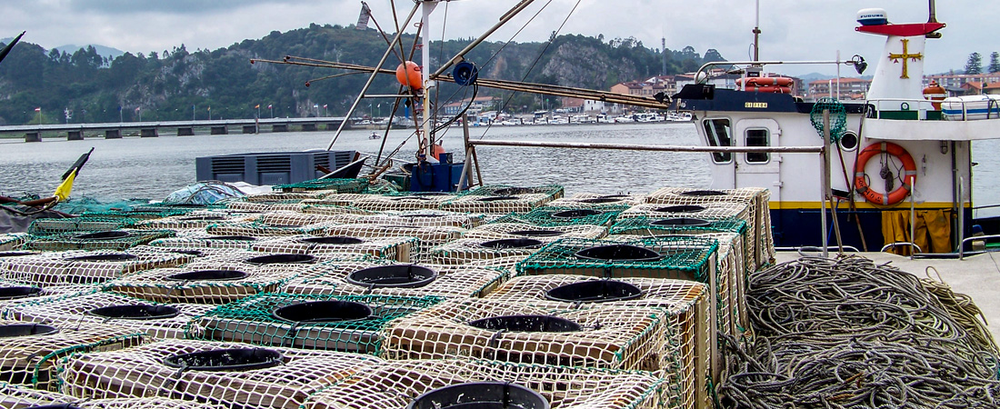

LA PESCA EN ASTURIAS

Asturias cuenta con una marcada tradición marinera. Los puertos pesqueros asturianos disponenen de una flota de carácter artesanal, que pesca y desembarca pescado y marisco en las rulas con un tiempo entre la captura y la primera venta inferior al día.
La flota de bajura artesanal desarrolla su actividad en los caladeros de las costas asturianas. Para ello utiliza nasas, anzuelos o redes, los cuales no repercuten de manera perjudicial sobre el medio marino.
Las principales especies son las siguientes:
| Especies vedadas | Fechas |
|---|---|
| Centollo | 1 agosto - 14 diciembre |
| Cangrejo de mar | 1 enero - 31 mayo |
| Buey | 1 agosto - 14 diciembre |
| Burón | 1 mayo - 30 septiembre |
| Nécora | 15 enero - 15 marzo |
| Bogavante | 15 septiembre - 30 abril |
| Langosta | 15 septiembre - 30 abril |
| Erizo de mar | Todo el año |